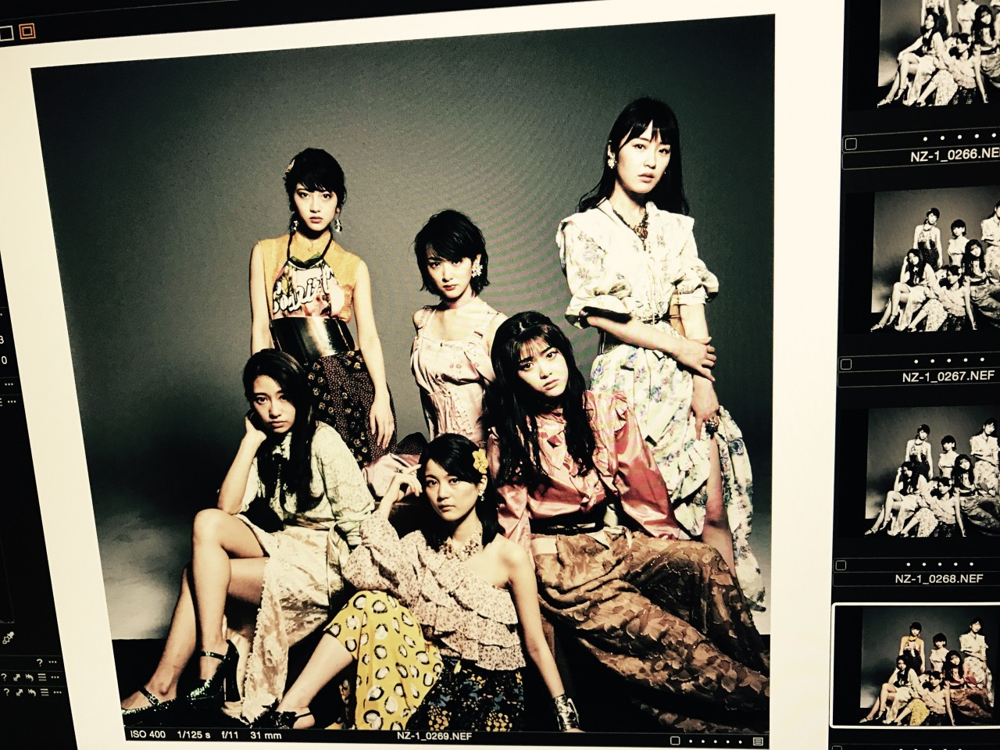
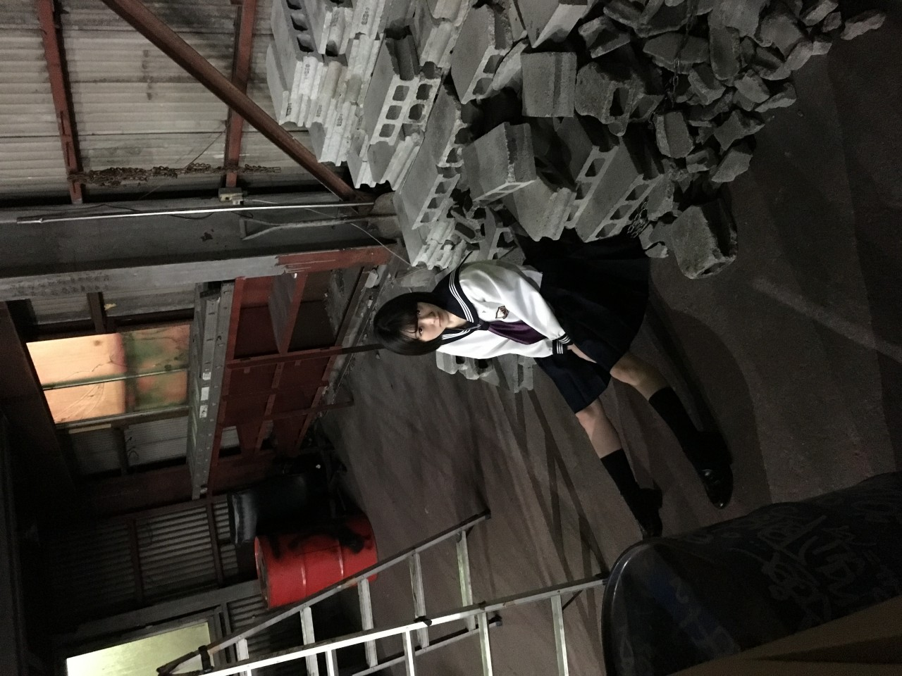
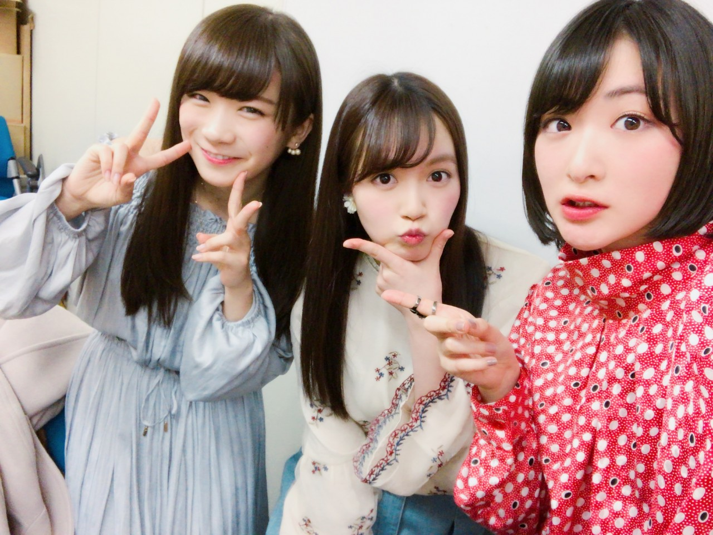
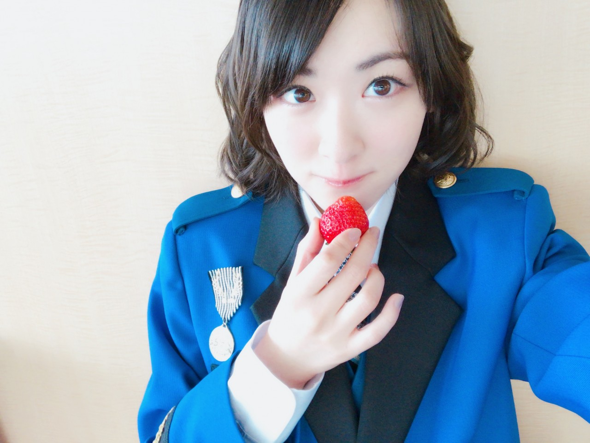

| 2017/03 26 Sun | 掃除機かけますか〜(*꒳`*) |
17枚目シングル
インフルエンサー
沢山の方に手に取って頂けて凄く嬉しいです！！

ジャケ写もMVもお洒落です(*´꒳`*)

お久しぶりの個人PV もぜひ。。

ひめが復活しました(´；ω；｀)
ひめ待ってたよ〜！！
真夏もお疲れ様(*´꒳`*)
らじらーさんは乃木坂にとって失いたくない素敵な場所です。
ひめを筆頭に、
これからもずっと続けて行きたいな(*´꒳`*)☆☆

私の芸能人人生で、
乃木坂の次に長いのはジャンポリなんです！！
今年の春から4年目ですって！！
すごすぎー！！
差し入れのいちごを
スタッフさん達と一緒に
可愛く自撮りしてから食べるって謎のゲームをしてました笑

そんな撮影中の梨花さんをパシャりんこっ♡
変わらずジャンプは私の支え、
そのジャンプのお仕事をさせて貰えるという素晴らしい人生を大切にしたい楽しみたい！！
ジャンポリを春からも皆様応援よろしくお願いします！！！
最近色んな事を考えます。
それに対して
いいね、
それは違うね
としっかり言ってくれる周りの支え。
ありがたい。
だから、私はそれを実現させる、、笑
それが私にとってプラスになると信じてます！！
ではっ
へばなっ★彡
コメント(582)
2017/03/26 17:13